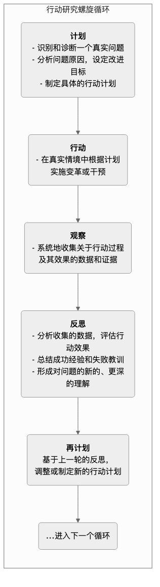

行动研究¶
在传统研究中，研究者通常扮演着一个客观、疏离的“观察者”角色，而研究对象则是被动地被“研究”。行动研究（Action Research） 彻底打破了这一壁垒，它是一种将“研究”与“实践”紧密结合、旨在解决实际问题并推动变革的循环性探究过程。其核心理念在于，知识不应仅仅被“发现”并束之高阁，而应在解决真实世界问题的行动中被“创造”和“应用”。
行动研究不是由外部专家为实践者开出的“药方”，而是由实践者亲自参与（通常与研究者合作），对自己所处的工作情境（如一个教室、一个社区、一个组织）进行系统性的诊断、反思、行动和评估。它回答的核心问题是：“我们如何才能改善我们当前的工作/处境？” 因此，行动研究具有强烈的情境性、参与性、协作性和循环往复的特征，它既是一个认识世界的过程，更是一个改造世界的过程。
行动研究的“行动-反思”螺旋循环¶
行动研究的灵魂在于其不断迭代的螺旋式循环过程。每一次循环都包含着四个紧密相连的环节，这个循环会不断重复，每一次都让实践者对问题的理解更深一层，让改进的行动更有效一点。
最经典的行动研究螺旋模型由库尔特·勒温（Kurt Lewin）提出，并被后人不断发展：

如何组织一次行动研究¶
-
识别一个值得关注的“实践难题”
行动研究始于实践者对自己工作中感到的困惑、不满或希望改进的地方。这个问题必须是具体的、真实的，并且是实践者自己有动力去解决的。例如，一位教师发现“学生在课堂讨论中参与度不高”。
-
组建合作团队并进行初步诊断
邀请所有与该问题相关的利益方（如其他教师、学生代表、研究者）组成一个合作小组。团队共同对问题进行深入的诊断，分析其可能的原因。
-
第一轮循环：计划、行动、观察、反思
- 计划：团队决定尝试一种新的教学方法——“小组辩论赛”，并制定了详细的实施方案。
- 行动：在接下来的一个月里，这位教师在她的课堂上实施了四次“小组辩论赛”。
- 观察：在此期间，她通过课堂录像、学生访谈和自己的教学日志，收集了关于学生参与度、发言质量和感受的数据。
- 反思：团队共同分析数据发现，虽然整体参与度显著提高，但一些性格内向的学生依然很少发言。同时，辩论赛占用了过多的教学时间。
-
进入下一轮循环
- 重新计划：基于上一轮的反思，团队对方案进行了修正。新方案调整为“课前线上分组讨论 + 课上代表总结陈词”，并为内向学生设置了“线上书记员”等不同角色。
- 再次行动、观察、反思……这个螺旋式上升的过程会一直持续下去，直到问题得到满意解决，或者团队对该问题形成了深刻的理解。
应用案例¶
案例一：教师专业发展
- 场景：一位高中数学教师希望提高学生对“函数”这一抽象概念的理解。
- 应用：她与大学的数学教育研究者合作，发起了一项行动研究。她们共同设计了一套基于现实生活情境（如手机话费套餐）的教学方案（计划），并在课堂上实施（行动）。通过分析学生的作业、测验成绩和课堂讨论（观察），她们发现学生对函数的理解确实加深了，但对符号运算能力提升不大（反思）。在下一轮循环中，她们对方案进行了调整，增加了符号运算的针对性练习。
案例二：社区发展与赋能
- 场景：一个老旧社区的居民普遍抱怨社区公共空间缺乏活力，邻里关系淡漠。
- 应用：几位社区工作者与居民代表一起，发起了“社区花园”行动研究项目。他们共同规划了一片荒地（计划），并组织居民一起动手改造、种植（行动）。在过程中，他们通过访谈和活动记录，观察到居民的参与感和邻里互动显著增加（观察）。在项目总结会上，大家反思了成功经验，并决定将这种模式推广到社区的其他公共空间改造中（重新计划）。
案例三：组织流程改进
- 场景：一家软件公司的开发团队发现，他们的产品发布流程过于冗长，经常导致延期。
- 应用：团队决定采用行动研究的方式来优化流程。他们首先绘制了现有的流程图，识别出瓶颈（计划）。然后，他们决定在下一个发布周期中，试行“持续集成”这一新方法（行动）。通过追踪代码提交频率、Bug数量和发布时间等数据（观察），他们发现新方法显著缩短了发布周期（反思）。于是，团队决定在全公司推广这一成功实践。
行动研究的优势与挑战¶
核心优势
- 直面真实问题：研究直接源于实践，旨在解决实践中遇到的真实、具体的问题。
- 赋能实践者：将实践者从被动的“被研究者”转变为主动的“研究者”，极大地提升了他们的专业反思能力和自主解决问题的能力。
- 理论与实践的桥梁：在行动中检验理论，在反思中发展理论，有效地连接了理论知识与实践智慧。
- 推动可持续变革：由于变革是由内部人员自下而上推动的，因此更容易被接受，也更具可持续性。
潜在挑战
- 严谨性与客观性：由于研究者本身就是参与者，如何保持研究过程的系统性和分析的客观性，是一个持续的挑战。详细的过程记录和团队协作是保证严谨性的关键。
- 时间与精力的投入：行动研究需要实践者在繁忙的日常工作之外，投入额外的时间和精力进行学习、反思和讨论。
- 结论的概括性：行动研究的结论通常是高度情境化的，其目的并非为了产生普适性的理论，而是为了改善特定的实践。因此，其研究结果很难直接推广到其他情境。
延伸与关联¶
- 定性研究：行动研究在数据收集中大量使用访谈、观察等定性方法。
- 批判理论（Critical Theory）：某些流派的行动研究（如批判行动研究）具有强烈的社会批判色彩，旨在揭示和挑战不平等的权力结构，推动社会解放。
- 精益（Lean）与敏捷（Agile）：在企业管理领域，精益思想中的PDCA（Plan-Do-Check-Act）循环以及敏捷开发中的迭代思想，都与行动研究的螺旋循环理念高度契合。
来源参考：库尔特·勒温（Kurt Lewin），一位格式塔心理学家，被广泛认为是“行动研究之父”。斯蒂芬·凯米斯（Stephen Kemmis）和罗宾·麦克塔格特（Robin McTaggart）的著作对行动研究的理论和实践模型有重要发展。在教育领域，约翰·埃利奥特（John Elliott）和劳伦斯·斯坦豪斯（Lawrence Stenhouse）是推动“教师作为研究者”运动的关键人物。